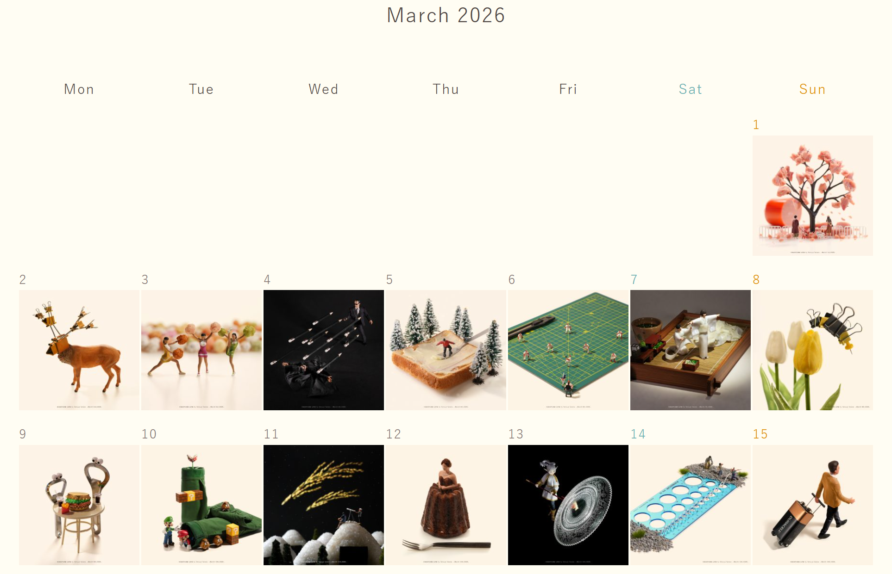
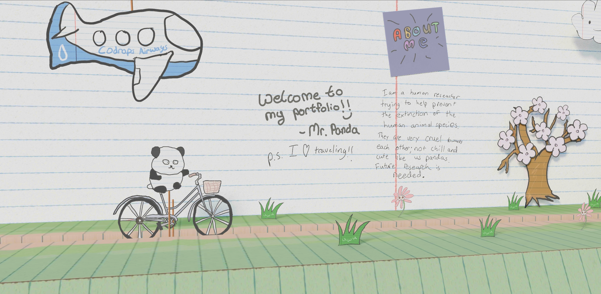
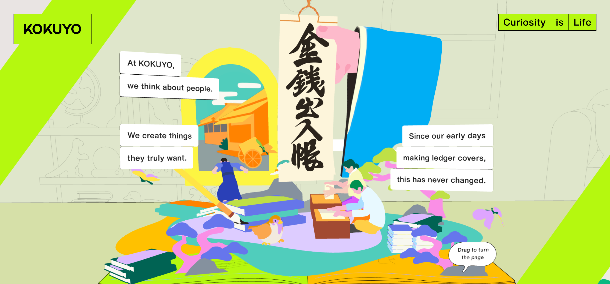

findings & inspirational content → scroll to explore
A daily art project reimagining everyday objects from a miniature perspective. Since 2011, Tanaka has updateded this wepage every single day with a new creation.
visit site ↗
A hand-drawn papercraft portfolio fighting back against toxicity in the creative industry. Inspired the scroll-to-navigate interaction for my final workbook.
visit site ↗
A special site celebrating KOKUYO's 120th anniversary through a modern, interactive media storytelling through a pop-up book aesthetic. Built to launch their first ever corporate message.
visit site ↗